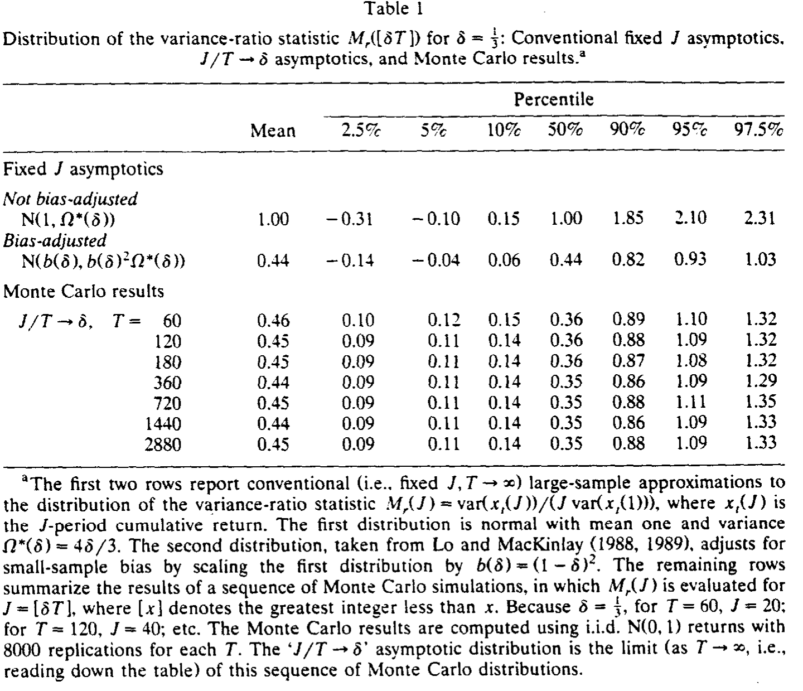
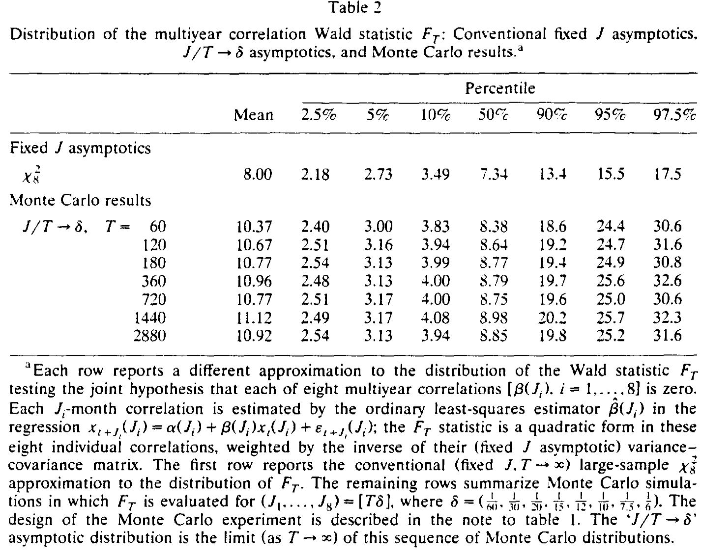
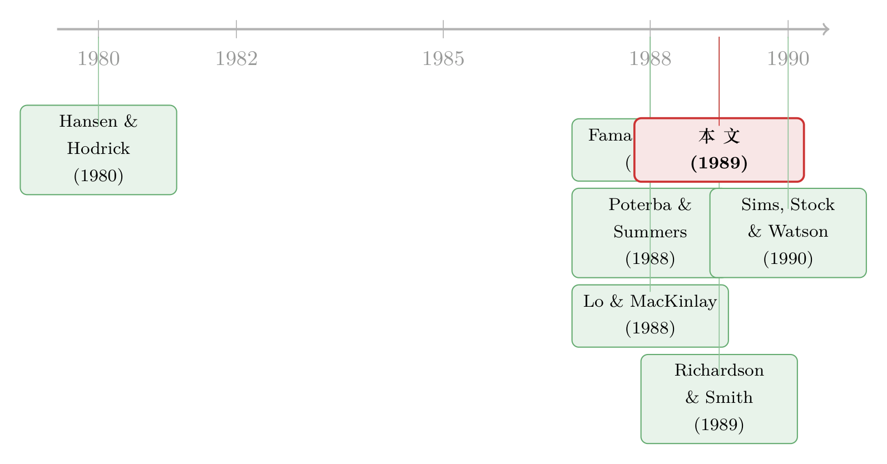

样本明明很大，独立信息却少得可怜——重读「长期收益」检验里的渐近幻觉
本文读的是 Richardson & Stock (1989, JFE)：当研究者用「多年期收益」去检验股价的均值回归时，常规的渐近理论（固定窗口 J、让 T→∞）会给出严重失真的临界值。两位作者改用 J/T → δ 的渐近框架，得到一族以布朗运动泛函表达的、非正态的极限分布——它把有限样本逼近得好得多，而一旦换上正确的临界值，那些「均值回归」的证据就大半消散了。
1 一个让人不安的悖论
先讲一个直觉上说不通的事。
二十世纪八十年代末，一股研究热潮席卷了金融计量：人们开始相信，股价里藏着一个缓慢回归的成分——短期看像随机游走，但拉长到三年、五年、八年，输家会翻身，赢家会回落。要捕捉这种低频的相关性，最自然的做法就是去看多年期收益 (multiyear returns)：把月度收益累加成 J 期的长收益，再去检验它们之间有没有负相关。Fama and French (1988) 和 Poterba and Summers (1988) 正是这么干的，他们也确实「找到」了长期负相关的统计证据。
可问题来了。要构造一个 8 年期的收益序列，你得把月度数据累加成 96 个月一段的长收益。即便你手上有 60 年、720 个月的数据，互不重叠 (nonoverlapping) 的 8 年段也只有 7、8 个而已。换句话说——
样本可以很大（T 很大），但真正独立的观测可以少得可怜。一条长长的多年期收益序列，里头其实没多少独立信息。
这就是全文的张力所在：一个看上去「大样本」的检验，骨子里却是个「小样本」问题。常规的大样本渐近理论，凭什么能在这里给出可信的临界值？Richardson and Stock (1989) 这篇论文，干的就是把这句直觉形式化，并一路推到底。
2 病灶：固定 J 的渐近理论错在哪
要看清病灶，得先看清「健康」长什么样。
设单期收益除了一个常数均值 μ 之外不可预测：
$$R_t = \mu + \varepsilon_t, \qquad t = 1,\dots,T$$
其中 ε_t 是鞅差序列（允许条件异方差，只要平均条件方差趋于一个常数 σ²）。J 期累计收益是
$$x_t(J) = \sum_{i=0}^{J-1} R_{t-i}$$
围绕它，人们构造两类方差比 (variance ratio) 统计量：用互不重叠数据算的 Â(J)，和用重叠数据算的 M_r(J)。后者就是大家最熟悉的那个——
$$M_r(J) = \frac{\operatorname{var}\big(x_t(J)\big)}{J\,\operatorname{var}\big(x_t(1)\big)}$$
若收益真是序列不相关的，J 期收益的方差应随 J 线性增长，这个比值就该等于 1；若存在均值回归（负相关），J 期方差的增长会慢于线性，比值就掉到 1 以下。
常规做法（也就是 Lo and MacKinlay 1988, 1989 分析的那套）是：固定 J，让 T→∞。在 i.i.d. 正态假设下他们证明，标准化之后的统计量服从正态分布：
$$\sqrt{T}\big(\hat A(J) - 1\big) \;\Rightarrow\; N\big(0,\; 2(J-1)\big)$$
$$\sqrt{T}\big(M_r(J) - 1\big) \;\Rightarrow\; N\!\left(0,\; \frac{2(2J-1)(J-1)}{3J}\right)$$
这套逼近在 J 小、T 大时工作得很好。但 Lo and MacKinlay (1989) 自己就承认：J 一旦相对 T 变大，它就崩了。有多崩？他们给了个触目惊心的例子——当 J = ⅓T 时，由 (5) 式构造出来的 t 统计量，对任何 T 都不可能小于 −1.74。也就是说，无论数据多么强烈地指向均值回归，这个 t 值都被钉在了一个永远「不够显著」的地板上方。逼近本身把结论给扭曲了。
毛病出在哪？出在「固定 J」这个假设上。它暗含 J/T → 0——可现实里，研究者们恰恰是在用 J/T 接近 1/10 到 1/3 的长窗口。理论里那个被当成「趋于零」的量，在数据里大得很。
3 关键一步：让 J/T → δ
于是真正关键的一步出现了。
Richardson and Stock 说：既然 J/T 在实践中是个不可忽略的分数，那就别再假装它趋于零，干脆让它收敛到一个固定的非零常数：
$$\frac{J}{T} \longrightarrow \delta, \qquad 0 < \delta < 1$$
这个看似微小的改动，带来了定性上完全不同的结论。
第一，统计量不再「一致」。 在固定 J 框架下，M_r(J) 依概率收敛到 1（是个一致估计）。但在 J/T → δ 框架下，它根本不收敛到任何常数，而是有一个非退化的极限分布。直觉是什么？因为此时互不重叠的段数固定在 1/δ——重叠是如此之大，以至于你手里实质上只剩下 1/δ 套独立的 J 期收益。信息量是有限的，统计量当然「定」不下来。
第二，极限分布不再是正态，而是布朗运动的泛函。 先看最干净的非重叠情形。假装 μ = 0 已知，当 T/J = 1/δ 是整数时，Â(J) 可以写成 1/δ 个独立部分和的平方之和。每个部分和（除以 √J）都满足中心极限定理，收敛到独立的 N(0, σ²)。于是直接得到一个卡方极限：
$$\hat A(J) \;\Rightarrow\; \frac{\chi^2_{1/\delta}}{1/\delta}$$
一个自由度只有 1/δ 的卡方除以它的自由度——这就是「独立信息只有 1/δ 份」最赤裸的体现。注意，这个结论即便在非正态、异方差下也成立。
重叠情形要难一点，靠的是一件更重的武器：泛函中心极限定理 (functional central limit theorem, FCLT)，也叫 Donsker 定理或不变原理。它说的是，收益的部分和过程作为一个整体，会收敛到一个单位区间上的布朗运动：
$$\frac{1}{\sqrt{T}}\sum_{t=1}^{[T\lambda]} \varepsilon_t \;\Rightarrow\; \sigma\, W(\lambda)$$
这里 W(λ) 是标准布朗运动，[·] 是取整函数，⇒ 表示分布意义上的弱收敛。（布朗运动作为连续随机过程的基本性质，可参见《给期权定价换一把「万能钥匙」：当所有扩散过程都能折回布朗运动》里更直观的铺陈。）
有了 FCLT，当 t/T → λ 且 J/T → δ 时，J 期收益就被「翻译」成布朗运动在长度 δ 窗口上的增量：
$$\frac{1}{\sqrt{T}}\,x_t(J) \;\Rightarrow\; \sigma\big(W(\lambda) - W(\lambda-\delta)\big)$$
把它代进 M_r(J) 的分子分母——分母（单期方差）依概率收敛到 σ²，分子收敛到一个布朗运动增量平方的积分——再把「用样本均值估 μ」这件事考虑进去（这会引入一个去均值的修正项），最终得到 M_r(J) 的极限表达：
这个表达式有一个极其漂亮的性质：它只依赖 δ 和标准布朗运动 W(λ)，而不依赖 μ、不依赖 σ、不依赖任何描述 ε_t 条件分布的讨厌参数。换句话说，分布虽然「不标准」、查不到现成的临界值表，但它是无参数 (parameter-free) 的——你完全可以用蒙特卡洛把它的分位数模拟出来。这正是后文第 6 节要做的事。
4 多年自相关，与一个联合检验
方差比之外，Fama and French (1988) 还用了另一个工具：直接对多年期收益跑自回归
$$x_{t+J}(J) = \alpha(J) + \beta(J)\,x_t(J) + \varepsilon_{t+J}(J)$$
斜率 β̂(J) 就是多年自相关。固定 J 框架下，Richardson and Smith (1989) 给出 √(T-2J+1)\,β̂(J) 渐近正态、方差随 J 增大。但同样地，当 J/T → δ 时，β̂(J) 也不再收敛到零，而是有一个布朗运动泛函的极限分布（论文的 (13) 式），其结构与方差比如出一辙——同样只依赖 δ 和 W(λ)。
更要命的是联合检验。研究者往往不只看一个 J，而是同时检验若干个多年自相关是否一起为零，用一个 Wald 统计量 F_T。在固定 J 框架下，F_T 渐近服从卡方分布；但在 J/T → δ 框架下，由于各个 β̂(J) 都是非正态的，F_T 不再是那个卡方。这一步的偏差，恰恰是后面那个最惊人数字的来源。
5 蒙特卡洛：到底哪套理论靠谱？
理论说得再好，也得回答一个经验问题：在实践遇到的样本量下，究竟是固定 J 的正态逼近、还是 J/T → δ 的布朗运动逼近，更接近真实的有限样本分布？
两位作者用蒙特卡洛给出了答案。思路很巧：既然 J/T → δ 的极限分布是「T 增大、且每个 T 都令 J = δT」这串模拟分布的极限，那就跑一序列 T 从 60 一路加到 2880 的模拟，看分位数收不收敛、收敛到哪。
先看方差比 M_r([δT])，取 δ = 1/3（这正落在实证文献用过的范围内）。

Table 1
如表 1 所示，有三点值得玩味。其一，蒙特卡洛分位数收敛得极快——T = 60 和 T = 2880 的结果几乎没差别，说明 J/T → δ 的渐近分布即便在很小的 T 下也是个令人满意的逼近。其二，固定 J 的逼近差得离谱：第一行未做偏差修正的正态分布，均值被钉在 1.00，而真实分布的均值在 0.45 上下、中位数更低到 0.35；Lo and MacKinlay 的「偏差修正」版本把均值拉到了 0.44（恰好等于极限的 (1-δ)²），是个进步，但它仍抓不住分布的偏斜，甚至把可观的概率质量错误地放到了零以下（5% 单侧临界值居然是负的）。真实分布是右偏的，正态逼近从根上就配不上它。
再看联合 Wald 检验 F_T，这里的对比更具杀伤力。

Table 2
如表 2 所示，Fama and French (1988) 检验的是 1、2、3、4、5、6、8、10 年共八个多年自相关同时为零。固定 J 的卡方逼近给出 95% 临界值 15.5；而蒙特卡洛模拟出的 J/T → δ 分布，95% 分位数高达约 25——足足高出六成，因为真实分布在右尾堆了更多的质量。
这个差距意味着什么？论文引言里给了一个把人钉在墙上的算例：检验 J = 2,4,6,8,10,12,16,20 八个自相关全为零、120 个观测。
用常规卡方 5% 临界值
15.5，这个检验实际会在 18% 的时候拒绝原假设；而换上J/T → δ的 5% 临界值25.2，拒绝率回到了名义的4.8%。
一个名义 5% 的检验，实际犯第一类错误的概率是 18%——三倍多。难怪人们「找到」了那么多均值回归。
6 回到那个问题：均值回归还在吗？
于是反转出现了。
当 Richardson and Stock 把正确的、J/T → δ 的临界值用回到真实股价数据上，那些原本「显著」的均值回归证据，大半就站不住了。摘要里的措辞很克制但意思很清楚：新理论给出的经验推断，「与『不存在均值回归』这一假设的矛盾要小得多」。
注意，这篇论文并没有去证明股价是随机游走。它做的是一件更基础、也更重要的事：指出此前那一波证据所依赖的尺子本身刻度错了。两套理论——固定 J 与 J/T → δ——其实各自都没错，它们都是建立在中心极限定理之上的合法大样本逼近；计量经济学家当初选 J 时心里有没有一个非零的 δ，根本无关紧要。渐近理论真正的价值，是给有限样本分布提供一个稳健的逼近。而哪一套逼近得更好，是个经验问题——蒙特卡洛已经替我们投了票。
这正是「长窗口回归」整类方法的通病。用更长的窗口、更多的重叠，看似榨出了更多低频信息，实则只是在反复使用同一批独立观测，把虚假的精度灌进了标准误里。（关于长期预测回归如何「用更多数据买来更大偏差」，可参见《用更多的数据，买来更大的偏差——长期预测回归里那场小样本幻觉》与《回归用得越「长」，越容易看见根本不存在的东西》；至于「输家翻身」究竟是市场犯傻还是我们量错了风险，则可对看《「输家会翻身」这件事，究竟是市场犯傻，还是我们量错了风险？》。）
7 文献脉络
把这条线索捋一捋，它的位置就清楚了。
最早，Hansen and Hodrick (1980) 为了处理重叠数据导致的移动平均误差，发明了一套稳健标准误的算法——这成了后来所有「多年期收益」研究计算标准误的默认工具。接着，Fama and French (1988) 与 Poterba and Summers (1988) 几乎同时点燃了「均值回归」的热潮，前者用多年自相关回归，后者用方差比，都报告了长期负相关。Lo and MacKinlay (1988, 1989) 随后给出了方差比检验在固定 J 下的渐近理论，并诚实地警告：当 J 相对 T 较大时，这套正态逼近会失灵。

然后，一个自然的问题浮出水面：既然大家都怀疑有限样本的表现，那到底该用什么分布？Richardson and Smith (1989) 在固定 J 框架下精确刻画了重叠观测下统计量的协方差矩阵；而本文（Richardson and Stock, 1989）则换了赛道——它借用了同期正在「单位根 (unit root)」计量文献里日渐成熟的工具（用一串蒙特卡洛模拟去数值逼近非标准渐近分布，如 Perron 1989、Stock 1988 的做法，以及 Sims, Stock and Watson 1990 对含单位根模型的推断），把 J/T → δ 的渐近理论第一次系统地引进了「多年期收益」这个问题。它和单位根文献共享同一套数学底座：FCLT、布朗运动泛函、非正态极限。
评论与延伸（Q&A + 研究方向）
(a) 几个可能的疑问
Q：J/T → δ 和固定 J，到底哪个才是「对」的渐近理论？
两个都对，也都只是逼近。它们是对同一个有限样本问题的两种合法大样本近似，区别只在于把
J/T当成趋于零还是趋于一个正数δ。论文的立场很务实：不去争哲学，而去比逼近质量——蒙特卡洛显示J/T → δ在实践样本量下贴合得好得多，仅此而已。
Q：为什么说统计量「不一致」反而是件好事？
「不一致」听起来像缺点，其实是诚实。固定
J理论说M_r(J)会收敛到 1，于是任何对 1 的偏离都被当成信号；可当重叠极大、独立段只有1/δ份时，统计量本就不该「定」下来——它有一个宽阔的非退化分布。承认这一点，才不会把抽样波动误读成均值回归。
Q：那个无参数性质（分布只依赖 δ 和 W）为什么如此关键？
因为它让整套理论可用。非正态、查不到表，本来是个麻烦；但既然极限分布不含
μ、σ和任何条件分布的讨厌参数，你就能用一次蒙特卡洛把临界值一劳永逸地算出来，对任何数据都通用。漂亮的理论若不可操作，等于零。
Q：条件异方差会不会毁掉这些结论？
不会，这正是论文的稳健之处。模型
(1)允许ε_t有条件异方差，只要平均条件方差趋于常数σ²。非重叠情形的卡方结果(7)明确指出，即便存在非正态与异方差，结论依然成立——靠的是 FCLT 对弱相依序列的版本（Herrndorff 1984）。
Q：这是不是等于说「股价就是随机游走」？
不是。论文从未声称证明了随机游走，它只是拆掉了此前证据所依赖的错误尺子。换上正确临界值后，矛盾「小得多」，但「小得多」不等于「为零」。它是一篇关于如何下结论的论文，不是一篇关于结论是什么的论文。
Q：那 Hansen-Hodrick 标准误还能用吗？
论文专门检验了这一点：在固定
J下，Hansen-Hodrick 估计量依概率收敛到真方差；但在J/T → δ下，它除以T之后弱收敛到一个布朗运动泛函——也就是说，它不收敛到常数。用别的权重函数也救不了，这是重叠本身的问题。
(b) 几个可能的研究问题与提案
1. 把 J/T → δ 渐近搬到公司债的长期收益检验上。
【经济故事】公司债的月度收益噪声大、且天然带有久期与信用利差的低频成分，研究者很想用多年期收益去看「信用利差是否均值回归」。但公司债样本期短、流动性事件密集，重叠观测问题只会比股票更严重。【可行性】中。数据上 TRACE + Lehman/ICE 指数可得，识别上直接套用本文的蒙特卡洛配方即可；难点在于公司债收益的厚尾与跳跃是否仍满足 FCLT 的弱相依条件，需要额外论证。
2. 外资持有人冲击的「长期效应」检验，会不会也栽在重叠观测上？ 【经济故事】很多研究宣称外资流入/流出对一国资产价格有「持久」影响，做法常是把高频持仓变化累加成多年窗口再回归。若窗口相对样本期过长，所谓「持久效应」可能只是抽样波动被错误标准误放大的产物。【可行性】中。需要跨国机构持仓面板（如 FactSet/EPFR），识别上可用本文的临界值重做既有结论的稳健性检验，属于「方法论复检」型选题，doable 但贡献偏增量。
3. 流动性的「长期共动」是真信号还是重叠幻觉？
【经济故事】股债流动性被报告在长周期上高度共动（参见《市场快「干涸」的那一刻：股与债的流动性，原来听的是同一个人》）。这类共动检验若依赖低频累加，同样面临 1/δ 份独立信息的问题。【可行性】高。日度 Amihud/价差数据充足，把本文框架推广到双变量协方差比即可，识别清晰。
4. 用 J/T → δ 理论给「长期反转策略」的夏普比率做一次诚实的置信区间。
【经济故事】长期反转（3–5 年）策略的收益常被报告为「显著」，但其检验同样建立在重叠的长窗口收益上。把不一致性显式纳入，或许会发现置信区间宽得让策略「无罪释放」。【可行性】高。CRSP 数据现成，方法直接，是一个干净的复制+修正型实证。
参考文献
- Fama, E. F. and K. R. French (1988). Permanent and temporary components of stock prices. Journal of Political Economy 96, 246–273.
- Hansen, L. P. and R. J. Hodrick (1980). Forward exchange rates as optimal predictors of future spot rates: An econometric analysis. Journal of Political Economy 88, 829–853.
- Herrndorff, N. (1984). A functional central limit theorem for weakly dependent sequences of random variables. Annals of Probability 12, 141–153.
- Lo, A. W. and A. C. MacKinlay (1988). Stock prices do not follow random walks: Evidence from a simple specification test. Review of Financial Studies 1, 41–66.
- Lo, A. W. and A. C. MacKinlay (1989). The size and power of the variance ratio test in finite samples: A Monte Carlo investigation. Journal of Econometrics 40, 203–238.
- Perron, P. (1989). The great crash, the oil price shock, and the unit root hypothesis. Econometrica 57, 1361–1401.
- Poterba, J. M. and L. H. Summers (1988). Mean reversion in stock prices: Evidence and implications. Journal of Financial Economics 22, 27–59.
- Richardson, M. and T. Smith (1989). Tests of financial models in the presence of overlapping observations. Review of Financial Studies, forthcoming.
- Richardson, M. and J. H. Stock (1989). Drawing inferences from statistics based on multiyear asset returns. Journal of Financial Economics 25, 323–348.
- Sims, C. A., J. H. Stock and M. W. Watson (1990). Inference in linear time series models with some unit roots. Econometrica 58, 113–144.
- Stock, J. H. (1988). A reexamination of Friedman's consumption puzzle. Journal of Business and Economic Statistics 6, 401–414.